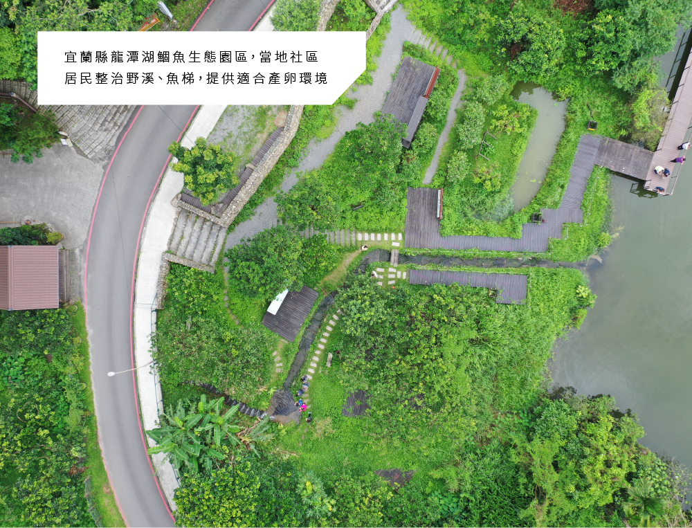
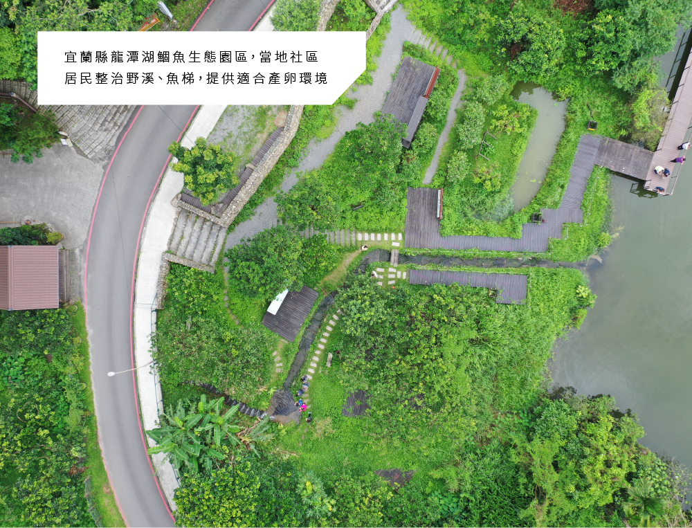

這幾年曾晴賢教授研究團隊主動協助礁溪龍潭湖社區民眾，一起進行扁圓吻鯝的生態保育工作，進行產卵洄游棲地的優化營造，和架設更有創意的水管魚道，可以讓魚群在溯溪時經由「水捷運」的幫助，更省時省力和安全的上溯。
這樣的設計已經得到初步的驗證成果，目前正朝向更高落差的挑戰前進。曾晴賢教授於夜中記錄扁圓吻鯝於PVC管道內努力溯游，「這是讓人感動的時刻，也希望研究成果能改善臺灣水環境，協助保護珍貴的河溪生態。」


扁圓吻鯝俗稱「鯁仔魚、憨仔魚、鯝魚」是臺灣原生魚種，20年前曾被認為敵不過外來魚種競爭，在臺灣消失了，但10年前卻在宜蘭礁溪龍潭湖中再被發現。扁圓吻鯝屬鯉科的淡水魚，體型可達40公分、重達1公斤。每年端午節前後到中元節之間，會趁著大雨過後，野溪水漲之際逆游進入山溝中產卵，上演「力爭上游」的生態秀。
扁圓吻鯝平常生活在湖沼中，因為有其他魚類會吃鯝魚的卵，所以鯝魚會游到山溝較高處產卵。一般在傍晚開始，河道裡就會擠滿逆流而上的鯝魚，場面相當壯觀和震撼。魚群密密麻麻擠在淺溪水裡，即使伸手入水觸摸，也不知閃避，因此被人笑稱是「憨仔魚」，其實牠們為了繁衍已經奮不顧身了。
成群結隊的魚從湖裡往野溪溯游，沿途找適當的地方產卵，成魚會隨著溪水消退再回湖裡，小卵則粘在水草或河底的石頭上。